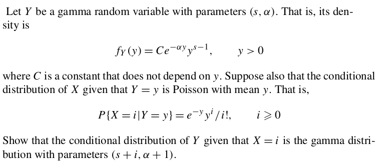

Proof:This, as you may have guessed, is an application of the fundamental theorem of probability. We shall not go into the details of the proof in this course.[QED]
EXAMPLE 1: If $f(x,y) = \left\{\begin{array}{ll}c&\text{if }x^2+y^2\leq 1\\ 0&\text{otherwise.}\end{array}\right.$ is a density, then find $c.$
SOLUTION: The total area under the density is the volume of the cylinder with unit radius and height $c.$ This volume is $\pi c.$ So we need $\pi c = 1,$ i.e., $c [ \frac 1\pi.$ ■EXAMPLE 2: Find $c\in{\mathbb R}$ such that $f(x,y) =\left\{\begin{array}{ll}c(x+y)&\text{if }0\leq x,y,\leq 2\\ 0&\text{otherwise.}\end{array}\right. $ is a density.
SOLUTION: We need $\int_{-\infty}^\infty\int_{-\infty}^\inftyf(x,y)\, dx dy = 1,$ i.e., $$\int_0^2\int_0^2 c(x+y)\, dx dy = 1.$$ Now $$\int_0^2\int_0^2 c(x+y)\, dx dy = c\int_0^2\left[\int_0^2 c(x+y)\, dx\right] dy = c\int_0^2\left[ \frac 12x^2+xy\right]_0^2 dy=c\int_0^2( 2+2y)\, dy=8c.$$ So we need $8c=1$ or $c = \frac 18.$ ■ This solution shows a very useful technique of performing a iterated integral (i.e., one integral inside another). The variable for the outer integral is considered a constant in the inner integral.EXERCISE 1: Find $c\in{\mathbb R}$ such that $f(x,y) =\left\{\begin{array}{ll}cxy&\text{if }0\leq x,y,\leq 2\\ 0&\text{otherwise.}\end{array}\right. $ is a density.
::EXERCISE 2: If $ax+by$ is a density on the unit square, what are the possible values for $a,b?$
::EXERCISE 3: Find $c\in{\mathbb R}$ such that $f(x,y) =\left\{\begin{array}{ll}ce^{-x-y}&\text{if }0\leq x,y,< \infty\\ 0&\text{otherwise.}\end{array}\right.$ is a density.
::EXERCISE 4: Find $c\in{\mathbb R}$ such that $f(x,y) =\left\{\begin{array}{ll}cye^{-x}&\text{if }0\leq x,y,< \infty\\ 0&\text{otherwise.}\end{array}\right. $ is a density
EXERCISE 5: Find $c\in{\mathbb R}$ such that $f(x,y) =\left\{\begin{array}{ll}cxy&\text{if }(x,y)\in[-1,1]\times[0,1]\\ 0&\text{otherwise.}\end{array}\right. $ is a density.
EXERCISE 6: [hpsjoint1.png]
EXERCISE 7: [hpsjoint2.png]
EXAMPLE 3: Let $(X,Y)$ have density $f(x,y) = \left\{\begin{array}{ll}x+y&\text{if }0\leq x,y\leq 1\\ 0&\text{otherwise.}\end{array}\right..$ Find $P(Y\leq X^2).$
SOLUTION: The random point $(X,Y)$ always lies in the unit square. Our set of interest is shown in red below. |
|---|
EXAMPLE 4: Let $(X,Y)$ have uniform distribution over the unit square. Find its CDF, $F(x,y).$
SOLUTION: The values of $F(x,y)$ over certain regions of ${\mathbb R}^2$ should be clear, as shown below.| The unit square is shown in red |
|---|
 |
|---|
 |
|---|
EXAMPLE 5: Let $(X,Y)$ have density $f(x,y)=x+y$ over the unit square. Find its CDF, $F(x,y).$
SOLUTION: The red-blue-green break up remains the same here as in the last example, as the support of the distribution is the unit square. The values (0 and 1) of the CDF over the white regions are also as before. For $(x,y)$ in the red region, $$F(x,y) = \int_0^x\int_0^y (u+v)\, dudv = \int_0^x\frac 12y^2+yv\,dv = \frac 12xy^2+xy.$$ Similarly, work out the values for the blue and green regions. ■ Finding the CDF from the density requires quite a bit of effort. But going the other way around is a lot easier. You just need to differentiate twice partially, once wrt $x$ and once wrt $y$ (in either order). Thus, $$f(x,y) = \frac{\partial^2}{\partial x\partial y} F(x,y)=\frac{\partial^2}{\partial y\partial x} F(x,y).$$ For $(x,y)$ where the partial derivatives fail to exist, set $f(x,y) = 0$ (or any arbitrary non-negative value). But remember that this formula works only when we know that a density exists!
But remember that this formula works only when we know that a density exists!
EXAMPLE 6: Let our CDF be $$F(x,y) = \left\{\begin{array}{ll}xy&\text{if }0< x,y\leq 1\\ x&\text{if }0<x\leq 1, y>1\\ y&\text{if }0<y\leq 1, x>1\\ 0&\text{if }x\leq 0\mbox{ or } y\leq 0\\ 1&\text{if }x, y>1\\ \end{array}\right.. $$ Given that a density exists, find it.
SOLUTION: Since we are about differentiate wrt both $x$ and $y,$ the parts of $F(x,y)$ that do not involve both the variables must vanish. So we need to work with only the $xy$ part, which after the two differentiations would yield $1.$ So a denity is $f(x,y) = \left\{\begin{array}{ll}1&\text{if }0<x,y<1\\ 0&\text{otherwise.}.\end{array}\right. $ ■EXERCISE 8: If two independent random variables $X,Y$ have marginal densities $f(t) = e^{-\lambda t}$ for $t>0$ (and 0 else), then find the joint density of $(X,Y).$
EXERCISE 9: $(X,Y)$ is distributed uniformly over the unit disc in ${\mathbb R}^2.$ Are $X,Y$ independent?
EXERCISE 10: If the joint density of $(X,Y)$ is of the form $f(x)g(y),$ then show that $X$ and $Y$ must be independent. Also show that $f_X\propto f$ and $f_Y\propto g.$
EXERCISE 11: If $(X,Y)$ are independent, then is it true that the joint CDF is the product of the marginal CDFs?
Proof: This is obvious from the definition of $f_{Y|X}(x|y).$[QED]
It is this theorem that justifies the definition of conditional PDF. Other than this difference, the rest follows as in the discrete case. We have the concepts of conditional expectation, conditional variance etc as usual. The tower property also works as before.EXERCISE 12: If $(X,Y)$ is uniformly distributed over the triangle $\{(x,y)~:~0\leq x \leq y,\, 0\leq y\leq 1\}.$ Guess a conditional density of $X$ given $Y=y?$ First try to guess, and then check it from the definition.
EXERCISE 13: Let $X|Y=y$ have density $f_{X|Y}(x|y) = \left\{\begin{array}{ll}c_y x^2&\text{if }x\in[0,y]\\ 0&\text{otherwise.}\end{array}\right.$, where $c_y$ is free of $x.$ Let $Y$ be uniformly distributed over $[0,1]$. Find $f_{Y|X=x}(y|x).$
EXERCISE 14: If $(X,Y)$ has joint density $f(x,y)=\left\{\begin{array}{ll}x+y&\text{if }0\leq x,y\leq 1\\ 0&\text{otherwise.}\end{array}\right.,$ then find $E(X|Y=y)$ and $V(Y|X=x).$
EXAMPLE 7: In a box we have 10 balls 4 of which are black, the rest being light magenta (with a tinge of yellow on one side). 2 balls are drawn one by one using SRSWOR. Let $X_1=$ the indicator of the $i$-th selected ball being black ($i=1,2$). Then show that $X_1,X_2$ are exchangeable.
SOLUTION:| $X_2=0$ | $X_2=1$ | |
| $X_1=0$ | $\frac{6\times5}{10\times9}$ | $\frac{6\times4}{10\times9}$ |
| $X_1=1$ | $\frac{4\times6}{10\times9}$ | $\frac{4\times3}{10\times9}$ |
EXERCISE 15: We have $n$ balls $m$ of which are dark purple (the rest being of a nondescript colour). We draw an SRSWOR of $k$ balls. Let $X_i=$ the indicator of the $i$-th selected ball being dark purple. Show that $X_1,...,X_k$ are exchangeable.
EXERCISE 16: Consider Polya's urn scheme (5 black 5 white to start with, 1 ball drawn at each step, replaced and 1 more ball of the observed colour added). Let $X_i=$ indicator of the $i$-th drawn ball being black. Show that $X_1,X_2,...,X_n$ are exchangeable for $n\in{\mathbb N}.$
Proof: Let $F(x_1,...,x_n)$ be the joint CDF of $(X_1,...,X_n).$
Let $\pi$ be any permutation $\{1,...,n\}$ with $\pi(1)=i_1, ..., \pi(k)=i_k.$ Then by exchangeability $F(x_1,...,x_n)$ is the joint CDF of $(X_{\pi(1)},...,X_{\pi(n)})$ as well. Then the joint CDF of $(X_{i_1},...,X_{i_k})$ is $F(x_1,...,x_k,\infty,...,\infty),$ which is free of $i_1,...,i_k,$ as required. [QED] Exchangeable random variables allow for symmetry arguments. The next problem is one example.EXERCISE 17: If $X_1,...,X_n$ are exchangeable positive random variables with finite expectations, then find $E((X_1+X_2)/(X_1+\cdots+X_n)).$
EXAMPLE 8: Suppose $X\sim Unif(0,1)$ and $Y = X.$ Then show that $(X,Y)$ is not jointly absolutely continuous.
SOLUTION: Here the CDF of $(X,Y)$ is $$ F(x,y)=P(X\leq x,\, Y\leq y) = P(X\leq\min\{x,y\}) = \left\{\begin{array}{ll}0&\text{if }\min\{x,y\}<0\\ 1&\text{if }0\leq \min\{x,y\} < 1\\ 1&\text{if }\min\{x,y\} \geq 1\\\end{array}\right.. $$ Hence, if $(X,Y)$ is jointly absolutely continuous, then a joint density would be given by $f(x,y)$, where $$f(x,y) = \frac{\partial^2}{\partial x\partial y} F(x,y).$$ This forces $f(x,y)\equiv 0,$ which is not a PDF. ■ However, if $(X,Y)$ is jointly absolutely continuous, then both $X$ and $Y$ must also be absolutely continuous.
EXERCISE 18: [hpsjoint3.png]
EXERCISE 19: [hpsjoint4.png]
EXERCISE 20: [hpsjoint5.png]
EXERCISE 21: [hpsjoint6.png]
EXERCISE 22: [hpsjoint7.png]
EXERCISE 23: [hpsjoint8.png]
EXERCISE 24: [hpsjoint9.png]
EXERCISE 25: [hpsjoint10.png]
EXERCISE 26: [hpsjoint11.png]
EXERCISE 27: [rossipmjoint1.png]
EXERCISE 28: [rossipmjoint2.png]
EXERCISE 29: [rossipmjoint3.png]
EXERCISE 30: [rossipmjoint4.png]
EXERCISE 31: [rossipmjoint5.png]
EXERCISE 32: [rossipmjoint6.png]
EXERCISE 33: [rossipmjoint7.png]
::
EXERCISE 34: [rossipmjoint8.png]
EXERCISE 35: [rossipmjoint9.png]
EXERCISE 36: [rossipmjoint10.png]
EXERCISE 37: [rossipmjoint11.png]
EXERCISE 38: [rossipmjoint12.png]
EXERCISE 39: [rossipmjoint13.png]